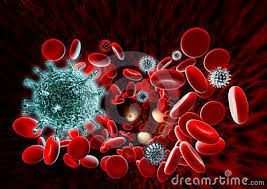
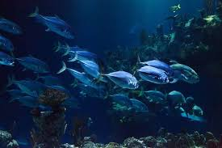

La biotecnología roja, también conocida como biotecnología médica o de la salud, se centra en la aplicación de la biotecnología en el campo de la medicina. Esto incluye el desarrollo de terapias génicas, medicamentos biotecnológicos, diagnósticos moleculares y medicina regenerativa. La biotecnología roja tiene como objetivo tratar enfermedades humanas, mejorar la calidad de vida y prolongar la esperanza de vida.

Biotecnología Verde
La biotecnología verde se enfoca en la agricultura y el medio ambiente. Incluye la mejora de cultivos mediante la ingeniería genética, la producción de biocombustibles, el desarrollo de biopesticidas y biofertilizantes, y la bioremediación para limpiar suelos y aguas contaminadas. La biotecnología verde busca mejorar la productividad agrícola y reducir el impacto ambiental de la agricultura.
Biotecnología Blanca
La biotecnología blanca, también conocida como biotecnología industrial, se centra en la aplicación de la biotecnología en la industria. Esto incluye la producción de bioplásticos, biocombustibles, enzimas industriales y productos químicos biodegradables utilizando microorganismos y procesos biológicos. La biotecnología blanca busca desarrollar procesos industriales más sostenibles y respetuosos con el medio ambiente.
Biotecnología Azul
La biotecnología azul se enfoca en los recursos biológicos marinos y acuáticos. Esto incluye el desarrollo de productos farmacéuticos y cosméticos a partir de organismos marinos, la acuicultura para la producción de alimentos marinos, la bioprospección de compuestos bioactivos y la bioremediación de ecosistemas acuáticos. La biotecnología azul busca aprovechar los recursos del mar de manera sostenible y conservar la biodiversidad marina.

Biotecnología Amarilla
La biotecnología amarilla se centra en la aplicación de la biotecnología en la industria alimentaria y nutricional. Esto incluye la mejora de alimentos mediante la ingeniería genética, la producción de alimentos funcionales y nutracéuticos, el desarrollo de cultivos resistentes a enfermedades y condiciones climáticas adversas, y la fermentación de alimentos y bebidas. La biotecnología amarilla busca mejorar la seguridad alimentaria y la nutrición humana.
Biotecnología Gris
La biotecnología gris se enfoca en la aplicación de la biotecnología en la gestión ambiental y la conservación de recursos naturales. Esto incluye la bioremediación de suelos contaminados, la gestión de residuos mediante procesos biológicos, la conservación de la biodiversidad y la restauración de ecosistemas degradados. La biotecnología gris busca resolver problemas ambientales y promover la sostenibilidad de los recursos naturales.